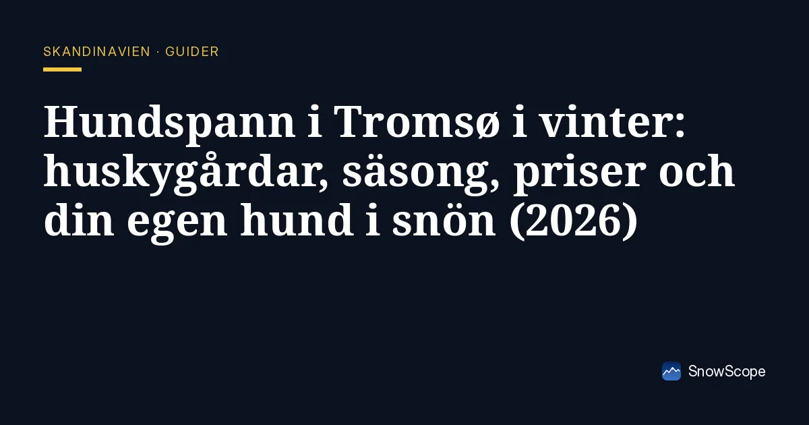

Hundspann i Tromsø i vinter: huskygårdar, säsong, priser och din egen hund i snön (2026)
Hundslädning på utkanten av Tromsø går från mitten av november genom våren, så länge det ligger tillräckligt med snö på marken. Den 13 november var stan själv knappt vit—bara 6 cm vid värstationen—men bergen var redo: Gjerdvassbu på 710 m hade 44 cm, tillräckligt för slädarna att glida.
Se snöprognosen för Scandinavia live i SnowScope-appenSnödjup, pudervarningar och 3D-kartan, gratis.

Var man åker släde: gårdar utanför stan har mer snö
Den bästa slädhundningen sker där snön ligger djupare och mer stabil. De flesta operatörer arbetar från Kvaløya i väster eller i dalarna inåtlandet, bort från stanstrafiken och urbant snöslask.
Tromsø Villmarkssenter på Kvaløya kör dagliga slädturer från 15 november till 30 april 2027. En tur varar ungefär 45 minuter i en gemensam släde med guide, inbäddad i en fyra timmar lång utflykt med transport, för 3 390 NOK per vuxen. Gården håller över 300 Alaskahuskies och driver ett café. Best Arctic vid Breivikeidet erbjuder en morgontur på fem timmar för 2 990 NOK. Active Tromsø också på Kvaløya kör heldag på ungefär sju timmar från november till mars.
November till januari: mörkret kommer före tinin
Solen går ned för säsongen i slutet av november och kommer inte tillbaka förrän mitten av januari. Visit Tromsø markerar polarnötten som går ungefär från 27 november till 15 januari. Det betyder inte totalt mörker vid middagstid: en blå skymning varar några timmar, och många gårdar kör turer i den.
Boka för början av november om du vill ha någon riktig dagsljus. Efter månadsskiftet, ta med dig en pannlampa, förvänta dig svag ljus och planera din tur enligt gårdens schema. Många slädturer sker i skymningen, vilket är en del av den arktiska upplevelsen.
Klä dig rätt för släden och vinden
En rörlig släde skapar vindkyla som gör även milda minusgrader känsliga. Du står eller sitter still, exponerad, så klä dig varmare än du skulle för aktiv rörelse. Lager fungerar bättre än en tjock jacka, och täck ditt ansikte, händer och fötter.
Gårdarna vet detta och brukar ge råd om vad man ska ha på sig; fråga när du bokar. Ta med en pannlampa även på dagturer, för ljuset försvinner snabbt och många rutter går genom skog.
Vandra med din egen hund i vinter-Tromsø
Norges nationella koppelregel löper från 1 april till 20 augusti, men Tromsø ställer sina egna året runt-regler. Hundar måste vara kopplade i bebyggda områden, i stan, på idrottsplatser och på upplysta skidfärder. Hela Tromsø—både fastlandet och Kvaløya—är renhjords betesmark hela året, och kommunen påminner invånarna om att hålla hundar nära och kopplade när renar kan vara närvarande.
Om din hund behöver springa lös, använd de inhägnande hundparkerna vid Kronen eller Charlottenlund. På uppistad skidfärder, gå vid sidan av spåret, inte i det, och plocka upp avfall. I djup vinterkyla bör hundar med kort päls ha en täckning.
Snödjup och vad det betyder för framfarten
Snö i början av november i Tromsø är riktig men inte djup. De 44 cm i bergen den 13 november räcker till för att åka skidor eller släde, men stenar kan fortfarande sitta nära ytan på branta sluttningar. När vintern går vidare och ny snö byggs upp, hårdnar basen och blir djupare.
Fråga gården eller spåroperatören om snödjup på din valda väg innan du åker. Skillnaden mellan stan och bergen är stor: lågt liggande mark har ofta mindre snö och mer snöslask, medan högre dalar förblir kallare och behåller snö bättre.
Tips för skidåkare
- Välj början av november för hundslädning om dagsljus är viktigt för dig; efter 27 november är solen borta till mitten av januari och alla turer sker i skymning eller mörker.
- Klä dig varmare än du tror att du behöver; en rörlig släde skapar vindkyla som biter hårdare än att stå still.
- Boka med en gård på Kvaløya eller i dalarna—de har mer snö och bättre förhållanden än markering i stan.
- Kopla din hund på upplysta spår och i stan året runt, och håll den borta från renar, som betar över Tromsø hela vintern.
- För freeridetur, kolla den senaste officiella lavinprognosen från Norges lavinvarsningstjänst innan du åker.
Om siffrorna
Snödjupen för skidorterna är det djupaste snötäcket på ortens övre backar på det angivna datumet; de är uppskattningar för ett område, inte en mätning på en punkt. Prognoser kan ändras. Läs alltid den officiella lavinprognosen innan du åker offpist.
Citera den här rapporten
För forskning, undervisning eller press: siffrorna och diagrammen får återanvändas fritt under CC BY 4.0 med den här källhänvisningen.
SnowScope (2026), Hundspann i Tromsø i vinter: huskygårdar, säsong, priser och din egen hund i snön (2026), https://snowscope.app/blog/sv/2026/11/tromso-dog-sledding-husky-farms-winter-guide-2026.html, hämtad 2026-11-14
SnowScope (Atlas Labs). (2026, November 14). Hundspann i Tromsø i vinter: huskygårdar, säsong, priser och din egen hund i snön (2026). SnowScope snow reports. https://snowscope.app/blog/sv/2026/11/tromso-dog-sledding-husky-farms-winter-guide-2026.html
BibTeX
@misc{snowscope2026tromsodogsleddinghuskyfa,
author = {{SnowScope (Atlas Labs)}},
title = {Hundspann i Tromsø i vinter: huskygårdar, säsong, priser och din egen hund i snön (2026)},
year = {2026},
month = nov,
howpublished = {\url{https://snowscope.app/blog/sv/2026/11/tromso-dog-sledding-husky-farms-winter-guide-2026.html}},
note = {Published 2026-11-14 14:19 UTC; accessed 2026-11-14}
}· CC BY 4.0 · Metoder, data och verktyg →
Följ Scandinavia
Gratis: ett meddelande när nysnö är på väg, och prognosen varje morgon.